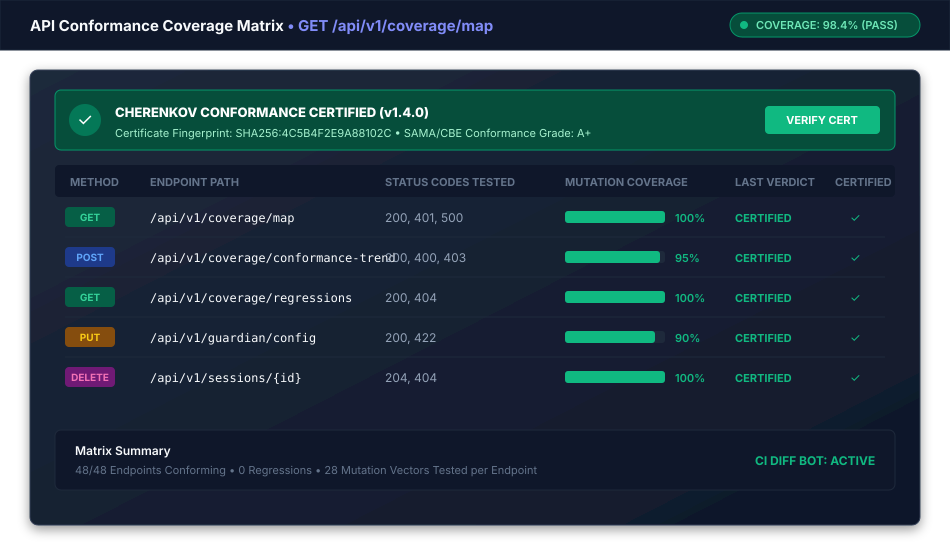

Certificates & Compliance
A CHERENKOV certificate is a tamper-evident JSON artifact that proves an API was tested against its OpenAPI spec at a specific point in time. It carries a SHA-256 fingerprint for integrity and an optional HMAC-SHA256 signature for authorship.
Quick Start
# Issue a certificate against the demo Petstore API
cherenkov certify
# Issue against your own API
cherenkov certify --url http://localhost:8080 --spec ./openapi.yaml --output cert.json
# Verify an existing certificate
cherenkov certify --verify cert.json
How It Works
flowchart LR
A[OpenAPI Spec] --> B[Proof Run]
C[Live Server] --> B
B --> D{Divergences?}
D -->|None| E["PASS"]
D -->|Medium/Low only| F["WARN"]
D -->|High/Critical| G["FAIL"]
E --> H[Sealed Certificate]
F --> H
G --> H
H -->|SHA-256| I[Fingerprint]
H -->|HMAC key| J[Signature]
style H fill:#7c3aed,stroke:#fff,stroke-width:2px,color:#fff
style E fill:#059669,stroke:#fff,stroke-width:2px,color:#fff
style G fill:#dc2626,stroke:#fff,stroke-width:2px,color:#fff
Figure: Per-endpoint conformance coverage matrix and signed compliance certificate status.Certificate Format
A sealed certificate looks like this:
{
"cert_id": "a1b2c3d4-e5f6-7890-abcd-ef1234567890",
"version": "1.0",
"issued_at": "2026-08-06T14:30:00+00:00",
"subject": {
"base_url": "http://localhost:8080",
"spec_hash": "3f2a1b4c5d6e7f8a"
},
"run_id": "run-9876",
"summary": {
"total": 5,
"critical": 0,
"high": 0,
"medium": 3,
"low": 2
},
"verdict": "WARN",
"divergences_json": [...],
"fingerprint": "sha256:abcdef1234567890...",
"signature": "hmac-sha256:fedcba0987654321..."
}
Verdict Rules
| Verdict | Condition |
|---|---|
| PASS | Zero divergences |
| WARN | Only MEDIUM and/or LOW divergences |
| FAIL | At least one HIGH or CRITICAL divergence |
Command Reference
cherenkov certify
| Flag | Description |
|---|---|
--url, -u |
Base URL of the live server. Defaults to the public Petstore demo |
--spec, -s |
Path or URL to the OpenAPI spec (JSON/YAML). Omit for built-in Petstore |
--output, -o |
Write the JSON certificate to this file |
--signing-key |
Hex-encoded 32-byte signing key. Also read from CHERENKOV_CERT_KEY env var |
--fail-on-fail |
Exit code 1 if verdict is FAIL (use as CI gate) |
--verify |
Verify an existing certificate file instead of running a new proof |
--compliance |
Print the compliance evidence mapping after issuing |
--coverage-report |
Print a spec coverage-gap report (requires --spec) |
--llm / --offline |
Use the LLM Skeptic (requires Ollama). Default: --offline |
Signing and Verification
# Generate a signing key
export CHERENKOV_CERT_KEY=$(openssl rand -hex 32)
# Issue a signed certificate
cherenkov certify --url http://localhost:8080 --signing-key $CHERENKOV_CERT_KEY --output cert.json
# Verify the signature later
cherenkov certify --verify cert.json --signing-key $CHERENKOV_CERT_KEY
An unsigned certificate still provides integrity (the SHA-256 fingerprint detects any modification). The HMAC signature adds authorship — proof that the certificate was issued by someone with the key.
Compliance Mappings
Pass --compliance to print how the certificate maps to regulatory frameworks:
cherenkov certify --url http://localhost:8080 --compliance
Supported Frameworks
| Framework | Provisions Covered |
|---|---|
| EU AI Act (2024/1689) | Art. 9 SS4 (residual risk), Art. 12 SS1 (logging integrity), Art. 12 SS2 (traceability), Art. 13 SS3 (transparency) |
| SOC 2 Type II | CC4.1 (risk analysis), CC6.7 (transmission integrity), CC7.2 (deficiency reporting) |
| ISO/IEC 25010:2023 | Functional correctness, Confidentiality, Accountability |
Each mapping shows:
- provision — the specific article or control
- cert_fields — which certificate fields satisfy it
- evidence — the concrete values from this certificate
- caveat — what the integrator must still do (e.g., manage the signing key per policy)
CI Gate
Use --fail-on-fail to block a pipeline when the API has HIGH or CRITICAL divergences:
# .github/workflows/certify-gate.yml
name: API Certification Gate
on:
push:
branches: [main]
pull_request:
jobs:
certify:
runs-on: ubuntu-latest
steps:
- uses: actions/checkout@v4
- uses: actions/setup-python@v5
with:
python-version: "3.12"
- name: Install CHERENKOV
run: |
git clone https://github.com/moaidmoatasem/cherenkov-qa.git /tmp/cherenkov-qa
pip install /tmp/cherenkov-qa
- name: Start API server
run: docker compose up -d api && sleep 5
- name: Certify
run: |
cherenkov certify \
--url http://localhost:8080 \
--spec api/openapi.yaml \
--output cert.json \
--fail-on-fail \
--compliance
- name: Upload certificate
uses: actions/upload-artifact@v4
if: always()
with:
name: conformance-certificate
path: cert.json
Certificate Spec
The full specification for the certificate format, including field semantics, versioning, and extension points, is documented in docs/specs/CHERENKOV_CERTIFICATE.md within the repository.
Next Steps
- Check Suite (Integrity Audit) — detect weakened or hallucinated assertions before certifying
- CI/CD Integration — embed certification in your pipeline
- Human-in-the-Loop Workflow — HITL decisions feed into the certification verdict
- Configuration —
CHERENKOV_CERTIFICATION_ENABLEDandCHERENKOV_MEANINGFUL_ASSERTION_GATE